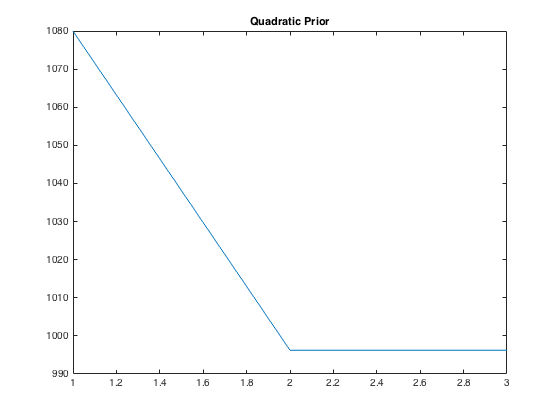

Contents
Q1
load('../data/assignmentImageReconstructionPhantom.mat');
[m,n] = size(imageNoiseless);
Y = imageKspaceData;
X_init = ifft2(Y);
A = imageNoiseless;
M = imageKspaceMask;
rmmse = RRMSE(X_init,A);
output = ['The RMMSE between the inverseFourier-kspaceData and the noiseless image is ', num2str(rmmse)];
disp(output)
The RMMSE between the inverseFourier-kspaceData and the noiseless image is 0.26123
MRF Prior: Quadratic Function
opt_alpha_1 = 0.9998;
output = ['optimal_alpha = ',num2str(opt_alpha_1)];
disp(output)
alpha_1_1 = 0.8*opt_alpha_1;
alpha_1_2 = min([1,1.2*opt_alpha_1]);
[reconstructed_image_1, obj_fun_1] = reconstruct_1(X_init,Y,M,opt_alpha_1);
[im1, ~] = reconstruct_1(X_init,Y,M,alpha_1_1);
[im2, ~] = reconstruct_1(X_init,Y,M,alpha_1_2);
opt_rrmse_1 = RRMSE(reconstructed_image_1,A);
rrmse_1_1 = RRMSE(im1,A);
rrmse_1_2 = RRMSE(im2,A);
output = ['RRMSE(optimal_alpha) = ',num2str(opt_rrmse_1)];
disp(output)
output = ['RRMSE(0.8*optimal_alpha) = ',num2str(rrmse_1_1)];
disp(output)
output = ['RRMSE(1.2*optimal_alpha) = ',num2str(rrmse_1_2)];
disp(output)
optimal_alpha = 0.9998
RRMSE(optimal_alpha) = 0.24382
RRMSE(0.8*optimal_alpha) = 0.26121
RRMSE(1.2*optimal_alpha) = 0.58804
MRF Prior: Huber Function
opt_alpha_2 = 1;
output = ['optimal_alpha = ',num2str(opt_alpha_2)];
disp(output)
opt_gamma_2 = 0.0042;
output = ['optimal_gamma = ',num2str(opt_gamma_2)];
disp(output)
alpha_2_1 = min([0.8*opt_alpha_2,1]);
alpha_2_2 = min([1.2*opt_alpha_2,1]);
gamma_2_1 = 0.8*opt_gamma_2;
gamma_2_2 = 1.2*opt_gamma_2;
[reconstructed_image_2, obj_fun_2] = reconstruct_2(X_init,Y,M,opt_alpha_2,opt_gamma_2);
[im1, ~] = reconstruct_2(X_init,Y,M,alpha_2_1,opt_gamma_2);
[im2, ~] = reconstruct_2(X_init,Y,M,alpha_2_2,opt_gamma_2);
[im3, ~] = reconstruct_2(X_init,Y,M,opt_alpha_2,gamma_2_1);
[im4, ~] = reconstruct_2(X_init,Y,M,opt_alpha_2,gamma_2_2);
opt_rrmse_2 = RRMSE(reconstructed_image_2,A);
rrmse_2_1 = RRMSE(im1,A);
rrmse_2_2 = RRMSE(im2,A);
rrmse_2_3 = RRMSE(im3,A);
rrmse_2_4 = RRMSE(im4,A);
output = ['RRMSE(optimal_alpha,optimal_gamma) = ',num2str(opt_rrmse_2)];
disp(output)
output = ['RRMSE(0.8*optimal_alpha,optimal_gamma) = ',num2str(rrmse_2_1)];
disp(output)
output = ['RRMSE(1.2*optimal_alpha,optimal_gamma) = ',num2str(rrmse_2_2)];
disp(output)
output = ['RRMSE(optimal_alpha,0.8*optimal_gamma) = ',num2str(rrmse_2_3)];
disp(output)
output = ['RRMSE(optimal_alpha,1.2*optimal_gamma) = ',num2str(rrmse_2_4)];
disp(output)
optimal_alpha = 1
optimal_gamma = 0.0042
RRMSE(optimal_alpha,optimal_gamma) = 0.18614
RRMSE(0.8*optimal_alpha,optimal_gamma) = 0.26123
RRMSE(1.2*optimal_alpha,optimal_gamma) = 0.18614
RRMSE(optimal_alpha,0.8*optimal_gamma) = 0.18633
RRMSE(optimal_alpha,1.2*optimal_gamma) = 0.18651
MRF Prior: Discontinuity Adaptive Function
opt_alpha_3 = 1;
output = ['optimal_alpha = ',num2str(opt_alpha_3)];
disp(output)
opt_gamma_3 = 0.0023;
output = ['optimal_gamma = ',num2str(opt_gamma_3)];
disp(output)
alpha_3_1 = min([0.8*opt_alpha_3,1]);
alpha_3_2 = min([1.2*opt_alpha_3,1]);
gamma_3_1 = 0.8*opt_gamma_3;
gamma_3_2 = 1.2*opt_gamma_3;
[reconstructed_image_3, obj_fun_3] = reconstruct_3(X_init,Y,M,opt_alpha_3,opt_gamma_3);
[im1, ~] = reconstruct_3(X_init,Y,M,alpha_3_1,opt_gamma_3);
[im2, ~] = reconstruct_3(X_init,Y,M,alpha_3_2,opt_gamma_3);
[im3, ~] = reconstruct_3(X_init,Y,M,opt_alpha_3,gamma_3_1);
[im4, ~] = reconstruct_3(X_init,Y,M,opt_alpha_3,gamma_3_2);
opt_rrmse_3 = RRMSE(reconstructed_image_3,A);
rrmse_3_1 = RRMSE(im1,A);
rrmse_3_2 = RRMSE(im2,A);
rrmse_3_3 = RRMSE(im3,A);
rrmse_3_4 = RRMSE(im4,A);
output = ['RRMSE(optimal_alpha,optimal_gamma) = ',num2str(opt_rrmse_3)];
disp(output)
output = ['RRMSE(0.8*optimal_alpha,optimal_gamma) = ',num2str(rrmse_3_1)];
disp(output)
output = ['RRMSE(1.2*optimal_alpha,optimal_gamma) = ',num2str(rrmse_3_2)];
disp(output)
output = ['RRMSE(optimal_alpha,0.8*optimal_gamma) = ',num2str(rrmse_3_3)];
disp(output)
output = ['RRMSE(optimal_alpha,1.2*optimal_gamma) = ',num2str(rrmse_3_4)];
disp(output)
optimal_alpha = 1
optimal_gamma = 0.0023
RRMSE(optimal_alpha,optimal_gamma) = 0.18715
RRMSE(0.8*optimal_alpha,optimal_gamma) = 0.26123
RRMSE(1.2*optimal_alpha,optimal_gamma) = 0.18715
RRMSE(optimal_alpha,0.8*optimal_gamma) = 0.18716
RRMSE(optimal_alpha,1.2*optimal_gamma) = 0.18739
Displaying the Images
figure();
imshow(A)
title('Noiseless Image')
figure();
imshow(abs(X_init))
title('InverseFourier-kspaceData')
figure();
imshow(abs(reconstructed_image_1))
title('Reconstructed Image using Quadratic Prior')
figure();
imshow(abs(reconstructed_image_2))
title('Reconstructed Image using Huber Prior')
figure();
imshow(abs(reconstructed_image_3))
title('Reconstructed Image using Discontinuity Adaptive Prior')
Plotting the objective functions
figure();
plot(obj_fun_1)
title('Quadratic Prior')
figure();
plot(obj_fun_2)
title('Huber Prior')
figure();
plot(obj_fun_3)
title('Discontinuity Adaptive Prior')
